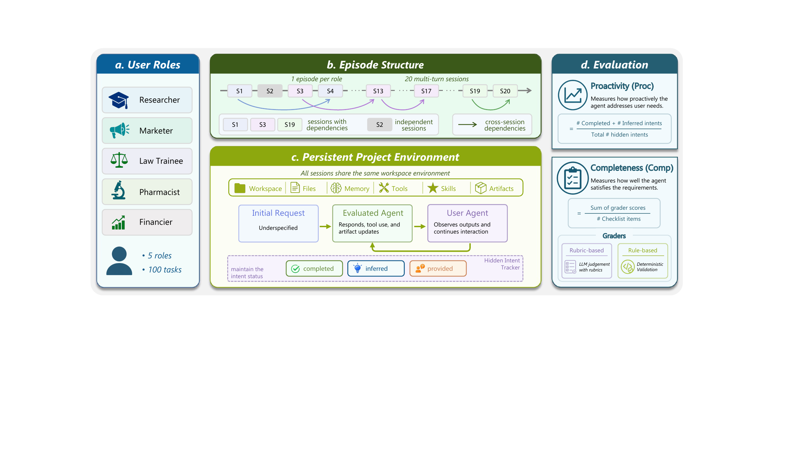
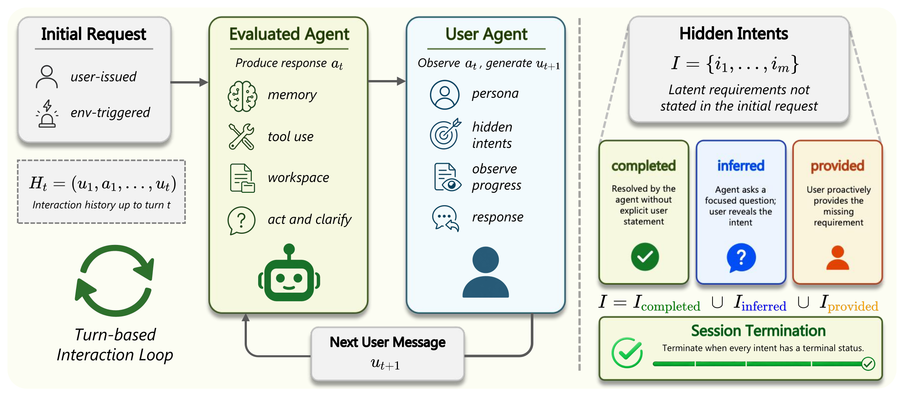

Natural underspecified requests that require the agent to inspect, ask, and act across a long-horizon personal episode.
Proactive Personal Assistant Benchmark
π-Bench Evaluating Proactive Personal Assistant Agents in Long-Horizon Workflows

Personal assistant agents are expected to help with work that unfolds over files, tools, preferences, and prior interactions. In these settings, success often depends on noticing constraints that users do not state explicitly, recovering relevant context, and asking the right question before acting.
π-Bench turns this capability into a controlled evaluation. Each task starts from a natural underspecified request inside a persistent personal workspace, and the agent must complete the visible request while resolving latent requirements embedded in the user's profile, history, files, application state, and domain tools. The benchmark contains 100 long-horizon tasks across 5 personal domains, with 524 hidden intents, 187 tools, 21 agent skills, and 678 checklist and rule-based graders.
Persistent profile, history, workspace files, application state, domain tools, and preferences that are not restated in the prompt.
Benchmark Overview
π-Bench focuses on the gap between solving a prompt and acting as a personal assistant. The agent receives ordinary user-facing messages, but the environment contains persistent state: profile information, previous sessions, workspace files, app data, tools, and domain-specific skills. This makes the evaluation depend on grounded behavior rather than isolated text generation.
The central object of evaluation is the hidden intent: a private preference, dependency, or constraint that matters for the user's real goal. Strong agents should infer these intents from context, verify uncertainty through targeted follow-up questions, and carry the constraints through to the final artifact.
Benchmark setting
Task
Profile
History
Workspace
Apps
Tools
Agent
ask · inspect · act
Evaluation outputs
Proc
proactive intent resolution
Comp
completed task requirements
We report Proc and Comp as independent evaluation outputs. Proc measures proactive hidden-intent resolution in the trajectory, while Comp measures checklist completion over the trajectory and delivered artifacts. Keeping these scores separate makes it possible to distinguish agents that finish visible work from agents that genuinely understand what the user needed.
Benchmark Design

Persistent Personal Episodes
Each episode is built around a user domain such as research, marketing, pharmacy, legal work, or finance. The user profile, task request, workspace files, application state, and tool inventory are designed together so that the task cannot be solved reliably from the initial message alone.
Hidden-Intent Tracking
During the interaction, the simulated user maintains hidden intents and reveals information only when the agent's behavior makes it natural to do so. The agent therefore has to decide when to proceed, when to inspect context, and when to ask a specific clarification.
Separated Evaluation
Final scoring combines trajectory-level evidence with artifact-level checks. Proactivity is evaluated through hidden-intent coverage, while completion is evaluated with rubric and rule graders. This separation is important: a model can produce a plausible artifact while missing a private constraint, or it can ask useful questions yet still fail part of the deliverable. The design makes both behaviors observable without exposing private intents directly to the agent.
Results
Current frontier agents achieve substantial task completion, but proactive intent recovery remains difficult. The table reports average Proc and Comp scores together with domain-level Proc / Comp scores across the five π-Bench user domains. In each domain cell, Proc is shown first and Comp second; blue cells mark the strongest score within a reported column.
Table 1
Overall Results on π-Bench
| Model | Avg Proc | Avg Comp | Researcher | Marketer | Pharmacist | Law Trainee | Financier |
|---|---|---|---|---|---|---|---|
| GPT-5.4 | 67.0 +/- 2.1 | 65.6 +/- 1.8 | Proc: 46.0Comp: 66.4 | Proc: 78.2Comp: 67.1 | Proc: 75.9Comp: 71.5 | Proc: 56.9Comp: 61.9 | Proc: 78.1Comp: 61.2 |
| Gemini 3.1 Pro | 57.1 +/- 0.9 | 60.0 +/- 0.8 | Proc: 41.1Comp: 59.2 | Proc: 65.0Comp: 62.1 | Proc: 71.0Comp: 72.1 | Proc: 50.0Comp: 55.3 | Proc: 58.6Comp: 51.1 |
| Claude Opus 4.6 | 65.5 +/- 1.4 | 67.6 +/- 1.5 | Proc: 50.3Comp: 74.5 | Proc: 75.0Comp: 74.6 | Proc: 82.8Comp: 68.6 | Proc: 45.7Comp: 57.2 | Proc: 73.8Comp: 63.2 |
| DeepSeek V3.2 | 53.3 +/- 1.9 | 57.8 +/- 3.0 | Proc: 29.0Comp: 66.9 | Proc: 69.1Comp: 59.4 | Proc: 75.9Comp: 62.6 | Proc: 33.2Comp: 51.1 | Proc: 59.1Comp: 48.9 |
| MiniMax M2.7 | 55.6 +/- 3.2 | 60.0 +/- 1.8 | Proc: 33.4Comp: 63.9 | Proc: 71.9Comp: 61.9 | Proc: 77.1Comp: 63.6 | Proc: 38.6Comp: 52.5 | Proc: 57.2Comp: 58.1 |
| Kimi K2.5 | 61.4 +/- 2.1 | 53.9 +/- 0.8 | Proc: 39.4Comp: 52.6 | Proc: 68.2Comp: 59.7 | Proc: 81.8Comp: 78.3 | Proc: 46.5Comp: 44.4 | Proc: 71.1Comp: 34.4 |
| Kimi K2.6 | 63.8 +/- 1.3 | 62.0 +/- 1.2 | Proc: 43.9Comp: 60.3 | Proc: 69.5Comp: 69.6 | Proc: 77.8Comp: 85.3 | Proc: 48.7Comp: 55.5 | Proc: 79.2Comp: 39.4 |
| Seed2.0 Pro | 58.4 +/- 0.9 | 52.1 +/- 3.8 | Proc: 38.9Comp: 59.6 | Proc: 71.4Comp: 44.2 | Proc: 77.0Comp: 67.6 | Proc: 46.0Comp: 44.7 | Proc: 58.7Comp: 44.5 |
| GLM-5.1 | 58.4 +/- 0.8 | 63.6 +/- 2.9 | Proc: 41.8Comp: 61.6 | Proc: 62.6Comp: 69.1 | Proc: 75.2Comp: 70.3 | Proc: 45.5Comp: 57.3 | Proc: 66.7Comp: 59.8 |
| Qwen3.6 Plus | 64.0 +/- 1.1 | 64.1 +/- 0.6 | Proc: 40.1Comp: 70.0 | Proc: 77.5Comp: 66.6 | Proc: 79.7Comp: 70.2 | Proc: 45.7Comp: 60.2 | Proc: 77.1Comp: 53.6 |
Figure 1
Overall Performance
Resources
Citation
@misc{zhang2026pibenchevaluatingproactivepersonal,
title={$\pi$-Bench: Evaluating Proactive Personal Assistant Agents in Long-Horizon Workflows},
author={Haoran Zhang and Luxin Xu and Zhilin Wang and Runquan Gui and Shunkai Zhang and Haodi Lei and Zihao He and Bingsu He and Chicheng Qin and Tong Zhu and Xiaoye Qu and Yang Yang and Yu Cheng and Yafu Li},
year={2026},
eprint={2605.14678},
archivePrefix={arXiv},
primaryClass={cs.AI},
url={https://arxiv.org/abs/2605.14678}
}